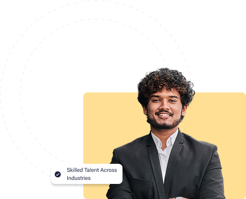
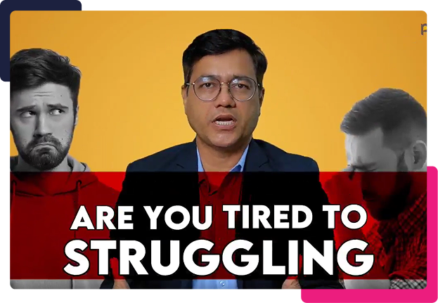
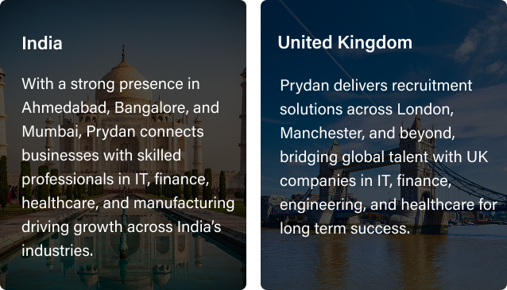

Recruitment
Find the right talent faster with our executive, domestic, and international recruitment solutions in India and the UK. We connect businesses with pre-screened professionals, ensuring long-term growth and success.
Learn MorePRYDAN is one of the leading recruitment agencies in India, helping businesses hire the right talent faster and professionals find the right opportunities.

At Prydan Recruitment Agency, we go beyond hiring we shape futures. From leadership hiring to global staffing solutions, we empower companies to build high-performing teams while helping professionals unlock their true potential. With a people-first approach and global talent network, we deliver workforce solutions that create measurable impact and lasting success.
More About UsSmarter hiring made simple. Prydan combines AI, expertise, and people-first recruitment to help companies in India & the UK hire top talent.

Empowering companies with the right talent, locally and globally

Reliable Recruitment and Staffing Agency in India
Find the right talent faster with our executive, domestic, and international recruitment solutions in India and the UK. We connect businesses with pre-screened professionals, ensuring long-term growth and success.
Learn MoreFlexible staffing services for contract, permanent, and bulk hiring. Our industry-ready candidates help businesses across IT, finance, and healthcare scale quickly and cost-effectively.
Learn MoreEnd-to-end recruitment outsourcing that reduces costs and speeds up hiring. With streamlined processes, compliance-driven screening, and global reach, we ensure efficiency at every stage.
Learn MoreScale your tech teams with skilled IT professionals for short-term or long-term projects. Our IT staffing solutions in India & the UK ensure on-demand support with zero delays.
Learn MoreOur passionate recruiters bring industry expertise and a people-first mindset to connect businesses with the right talent.
With advanced ATS and AI-powered tools, we streamline hiring to make the process faster, smarter, and more efficient.
Access to top databases and platforms like LinkedIn, Naukri, WorkIndia, and Indeed ensures a strong pipeline of pre-qualified candidates.
Our agile and lean recruitment process guarantees faster closures — on time and within budget, without compromising quality.